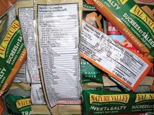

Module 1—Thinking Energy
Lesson 2—How Much Energy?
 Get Focused
Get Focused

In Lesson 1 you identified your daily energy intake from food. The food you eat provides you with chemical potential energy to maintain your body functions and your activity level. Although foods can vary greatly in the quantity of energy they provide, the energy contained within all food can be traced back to the sun—the biosphere’s ultimate energy source.
In this lesson you will investigate how the energy content of food is determined and how the principles used to collect energy are applied to other technologies. You will use what you learn to create a list of foods to offer the participants in your ecotour.
Consider the following question as you complete Lesson 2:
- How is energy quantified?
 Module 1: Lesson 2 Assignment
Module 1: Lesson 2 Assignment
Download a copy of the teacher-marked Module 1: Lesson 2 Assignment to your computer at this time. You will receive further instructions on how to complete this assignment later in this lesson.